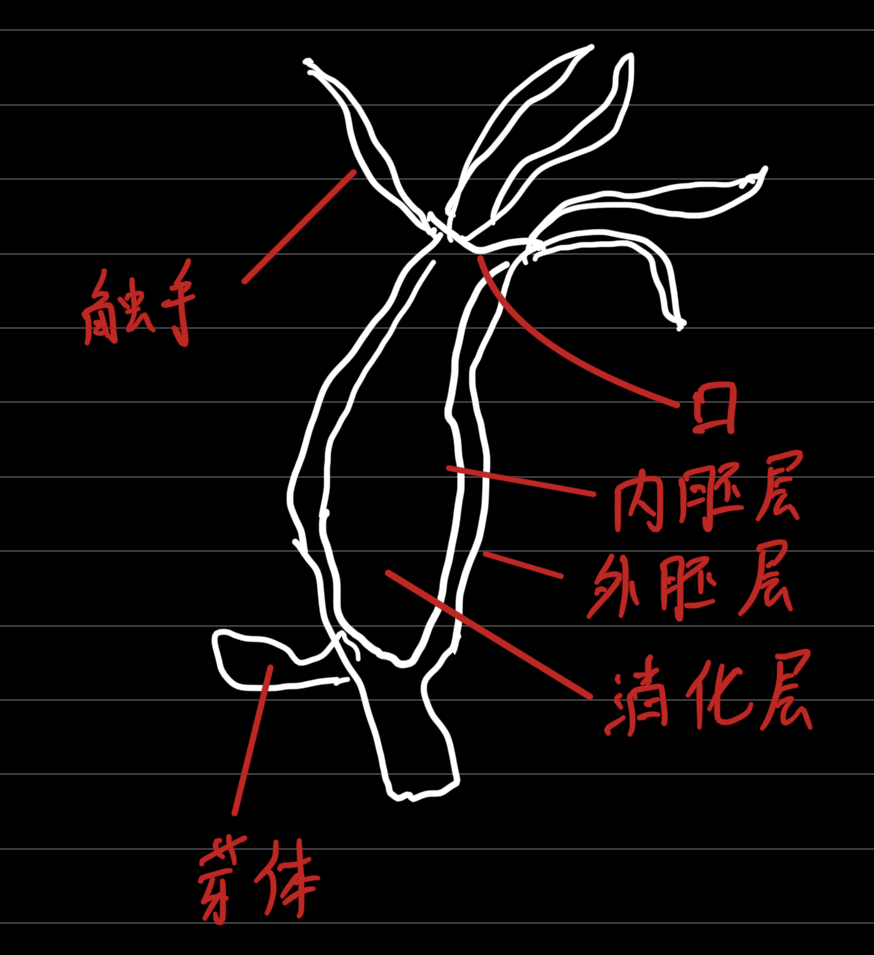

代表动物：水螅
水螅的结构特点（结构→功能）：
辐射对称：便于感知周围环境中来自各个方向的刺激。从各种方向捕食猎物，进行防御
口周围有触手→适应固着生活（水螅营固着生活）
水螅的结构与功能
| 结构 | 功能 |
| 外胚层 | 主要有保护、感觉、生殖作用 |
| 中胶层 | 粘住内胚层、外胚层 |
| 内胚层 | 主要有消化和吸收功能 |
| 口 | 吞进食物 |
| 触手 | 捕食 |
| 消化层 | 消化 |
水螅的身体由内外两层细胞构成
水螅对生活环境污染极其敏感，需要生活在水质洁净、水流缓慢>的地方（对人类的作用：可作为环境监测的指示生物）
水螅的外胚层和内胚层都只有一层细胞构成，外胚层和内胚层中间有中胶层。
水螅的捕食
刺细胞的分布：触手和口周围（触手上附着最多）
刺细胞内有毒素，碰到猎物时，射出刺丝，射入毒素，使猎物麻醉
水螅的生殖--通过芽体生殖（出芽生殖）
水螅的生殖方式属于无性生殖，由母体直接产生新个体
水螅没有神经中枢
腔肠动物的共同特征
有口无肛门
身体呈辐射对称
体表有刺细胞